01First build
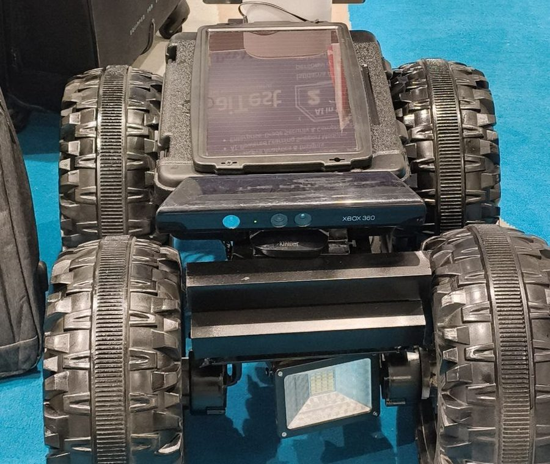
Stage 1
Proof the drive platform worked. Kinect-based depth sensing for obstacle avoidance, teleoperation, onboard lighting.
› Xbox Kinect 360 depth
› Teleoperation
› Onboard lighting
I build autonomous ground platforms and Arabic-language AI systems — usually offline, usually on hardware I can carry to a field and switch on. Currently architecting AI, computer vision and robotics programmes at FB Group.
Multi-Purpose Mobile Robot. One chassis, built four ways — each configuration re-tasking the same drive platform for a different job. Agriculture, then surveillance, then tracking. The evolution is the point.
Full project · 16 images & footage
Proof the drive platform worked. Kinect-based depth sensing for obstacle avoidance, teleoperation, onboard lighting.
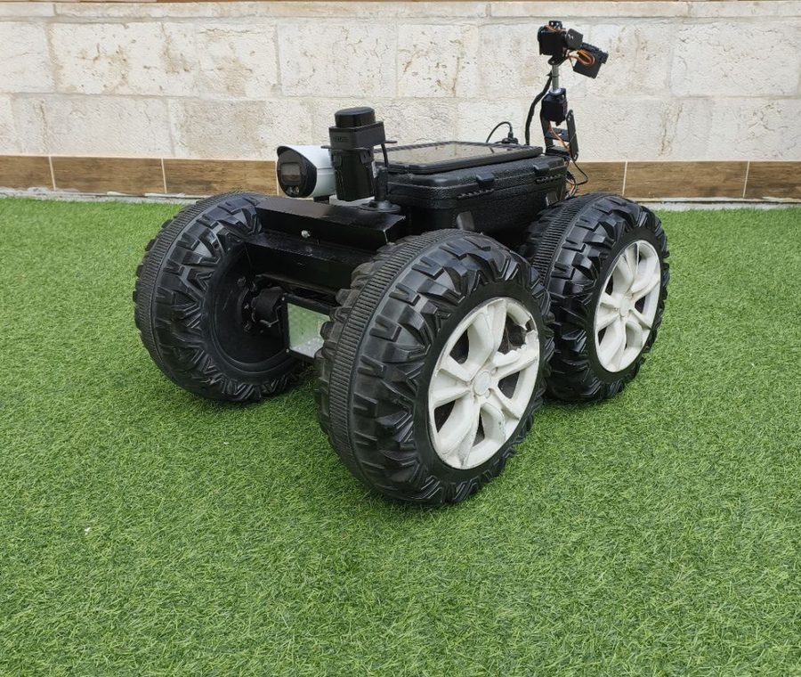
Autonomous navigation between crop rows with a 6-DOF arm and on-board plant disease classification.
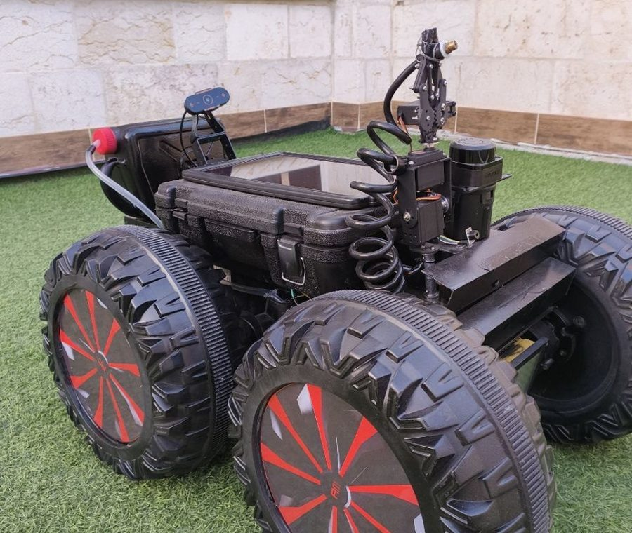
SLAM-based autonomous patrol with camera tracking, fire detection, and a tracked non-lethal water nozzle.
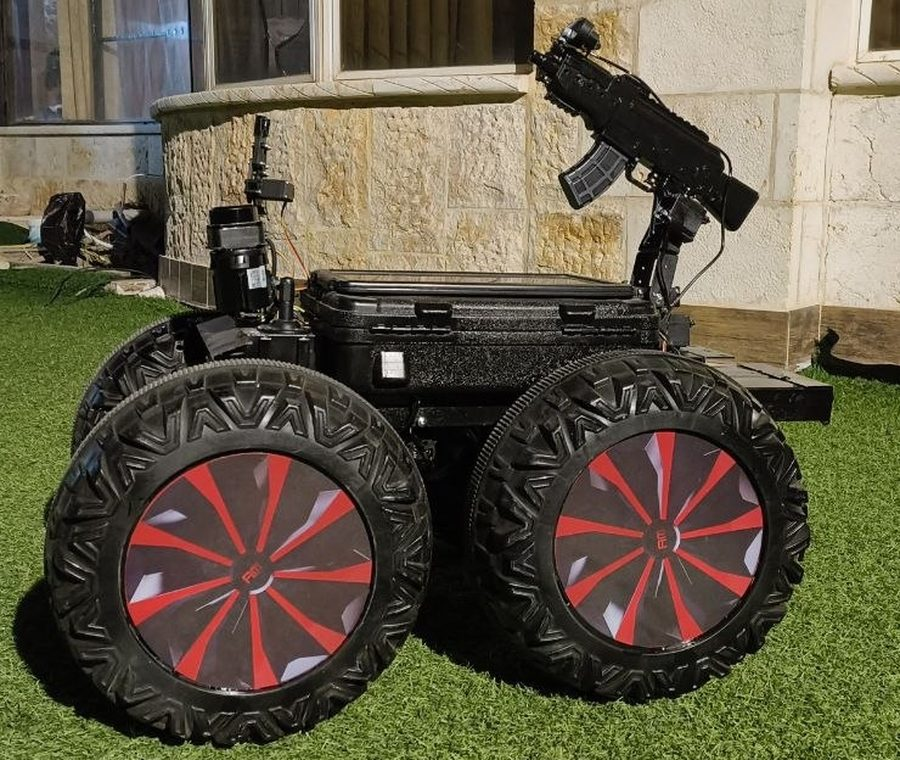
A stabilised pan-tilt turret that acquires and follows a moving target, mounted on the same chassis.
The current configuration. Vision-based target acquisition driving a stabilised pan-tilt mount, tested with a non-lethal platform.
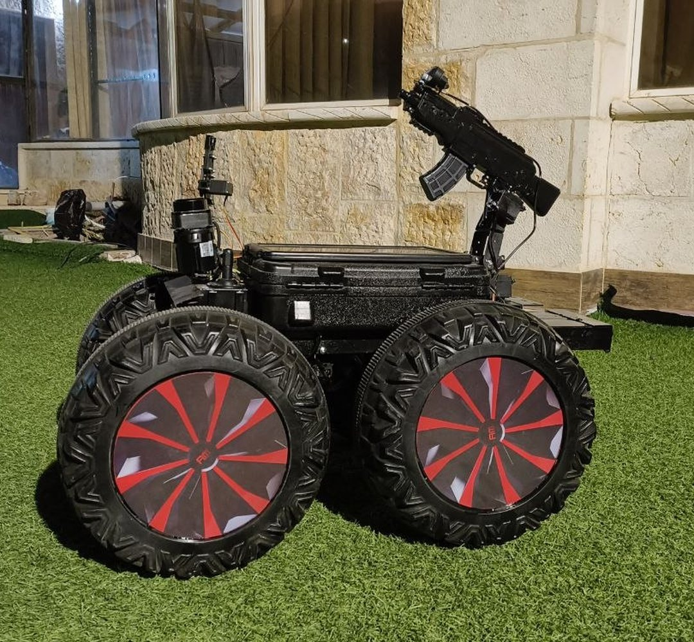
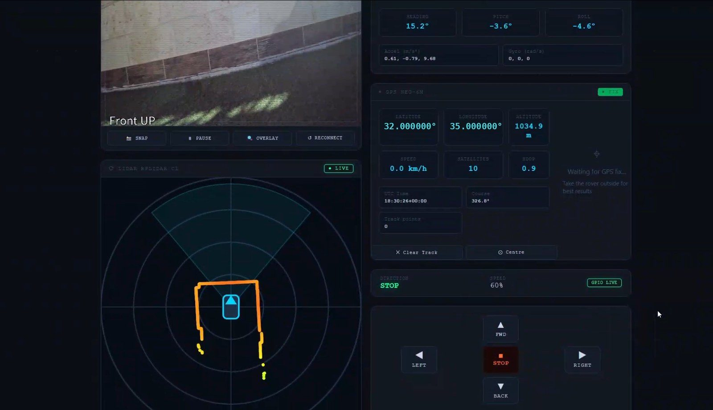
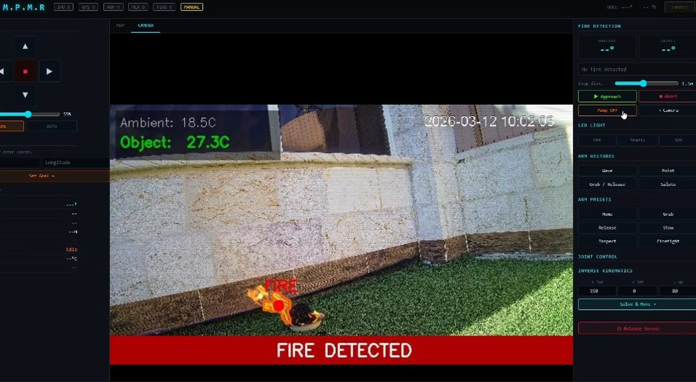
Demonstrated to Jordanian defence and public-security bodies, who showed serious interest. Development is ongoing.
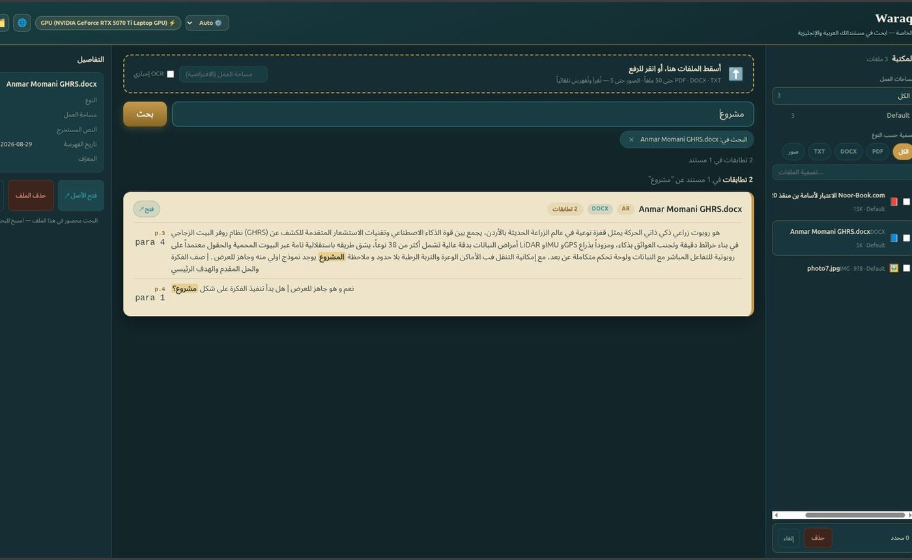
ShippingAn offline document vault for Arabic and English. Search that understands Arabic — normalising tashkil so a query matches text however it is vocalised. Everything stays on your machine.
View project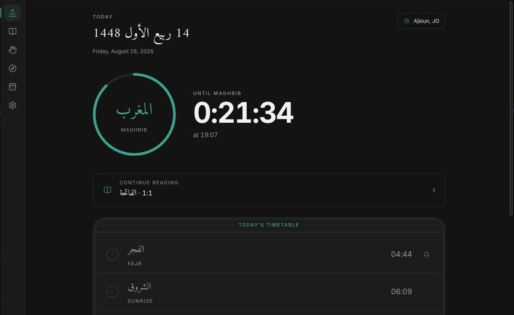
In buildPrayer times, Quran and athkar as a proper Linux desktop application — not a web page in a wrapper. Times computed locally, text bundled, no network required.
View project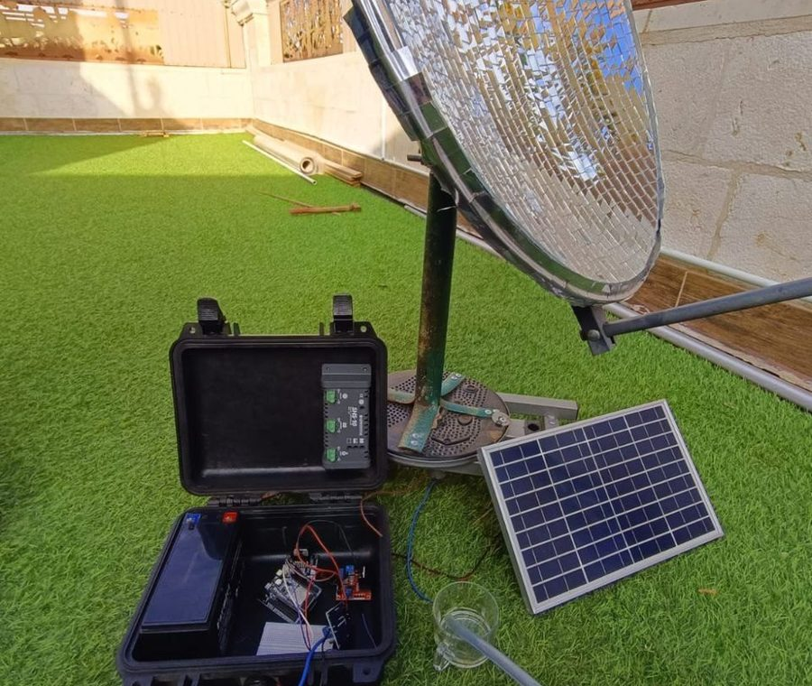
A transportable water unit: a sun-tracking mirrored dish concentrates a beam to heat water for distillation, alongside an atmospheric water generator.
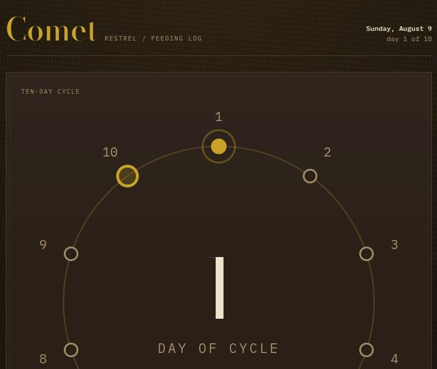
A feeding tracker for a common kestrel, built around a ten-day cycle rather than a weekly one. One HTML file, no dependencies, no server.
An agent that reads my project folders, works out what is worth publishing, and asks me for the assets — then generates them itself if I do not reply.
Posture monitoring — several IMUs fused with a Kalman filter, haptic feedback, and a phone app over BLE.
Everything below is public, buildable, and runs offline. Clone it and see.
Offline Arabic/English document vault. RTL-aware full-text search with tashkil normalisation, OCR ingest, Windows and Linux installers.
Prayer times, Quran reader and athkar for Linux desktops. Fully offline — bundled text, locally computed times, Qibla and Hijri calendar.
Greenhouse rover — ROS 2 navigation stack, EfficientNetV2-S plant disease detection, arm control and the live telemetry dashboard.
My robotics teaching centre — hands-on electronics and robotics taught in Arabic, where most of the good material only exists in English. Students work with real sensors and real microcontrollers rather than simulations.
Full project
Technical architecture and solution design for large-scale AI, computer vision and robotics programmes across government and enterprise. Requirements analysis, system and hardware architecture, AI/ML design, and the technical documentation behind competitive procurement submissions.
Retrieval-augmented AI agents — an AI tutor, plan generators, and speech-to-speech assistants.
Alongside the degree: Arduino and electronics, Python, and Raspberry Pi coursework.